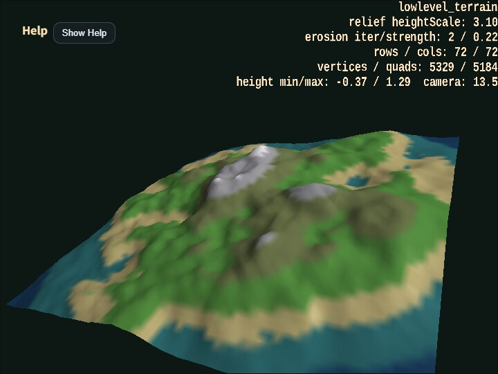

lowlevel_terrain
English | 日本語

Overview
- This sample uses
WebgAppfor the camera and HUD while building the terrain mesh itself only with the low-levelShapeAPI - It determines heights with value noise and
fbm, lays quads over a shared-vertex grid withaddPlane(), and constructs continuous terrain as a single mesh - It also generates a height-band texture from the same height field as the mesh, providing shoreline, grassland, rock, and snowline-like color transitions as one procedural texture
- Steep steps are softened with simple erosion-like smoothing, slightly collapsing sharp cliffs into more natural ridges and slopes
- Because a falloff lowers the outer area and raises the center, an island-like silhouette appears clearly
- The sample is arranged so that inspecting normals up close with orbit and zoom, then inspecting the outline from far away, makes the intention of the low-level terrain generation easier to understand
Q / Echanges camera distance and- / =changes terrain relief on the spot, making it easy to compare how appearance changes while the topology stays the same
How to Run
- Open ./lowlevel_terrain.html
- Use a browser with WebGPU support, and check the help panel and HUD together with the sample when needed
webg Features Used
WebgApp: initializes startup, camera, HUD, input, and fogEyeRig: orbit camera and zoomShape.addVertexUV(): places grid verticesShape.addPlane(): adds quads as pairs of triangles
Checkpoints
- Right after startup, confirm that an island-like terrain appears and can be inspected both from above and from an angled viewpoint with the orbit camera
- Confirm that rows / cols, vertex count, quad count, and the minimum and maximum height values are displayed at the upper right
- Confirm that surface colors change by height band, making the terrain easier to read from lowlands to highlands
- Because normals are generated from shared vertices, confirm that the terrain surface looks continuous and smooth
- Confirm that the erosion-like smoothing softens steep noise-only steps slightly compared with raw terrain noise
- Confirm that zooming in reveals mountain-surface slopes, while zooming out reveals the overall silhouette and the effect of the falloff
- Confirm that
heightScaleand the terrain relief change together at the upper right when using- / =
Controls
- Drag: orbit camera
- Two-finger drag: pan the camera
- Pinch / mouse wheel: zoom
- Arrow keys: orbit camera
[ / ]: zoomQ / E: move the camera closer / farther- / =: decrease / increase terrain reliefR: return to the default view